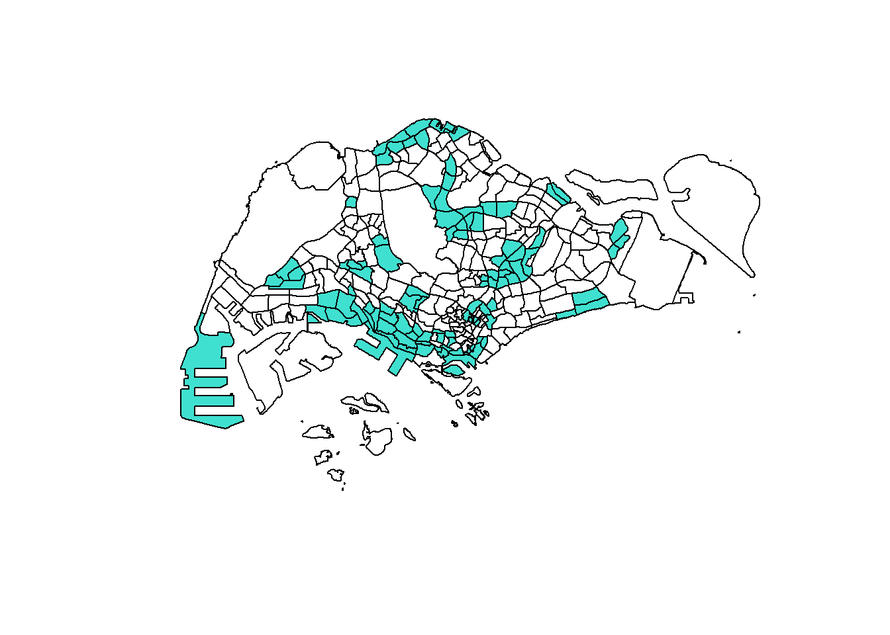
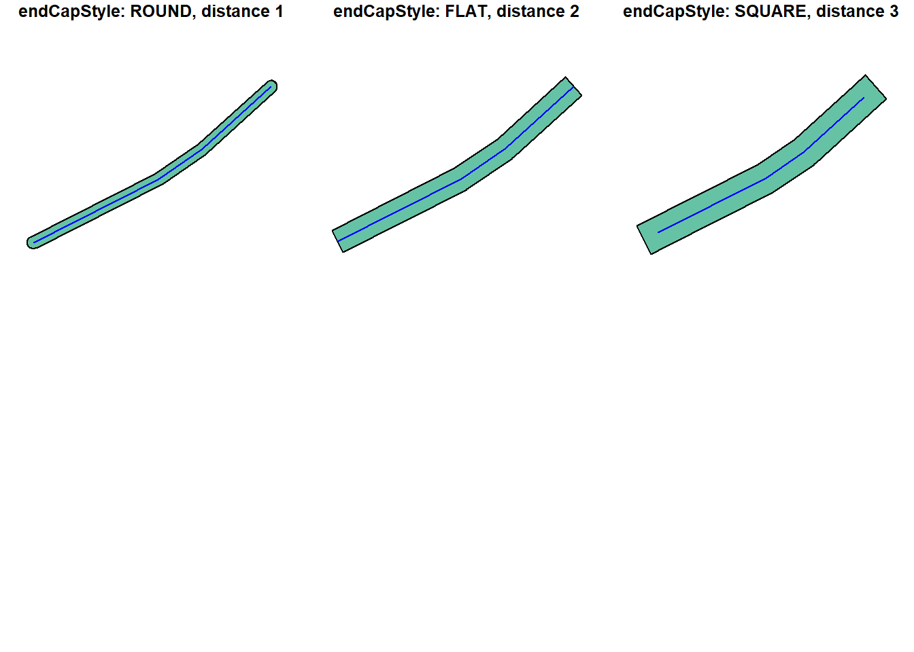
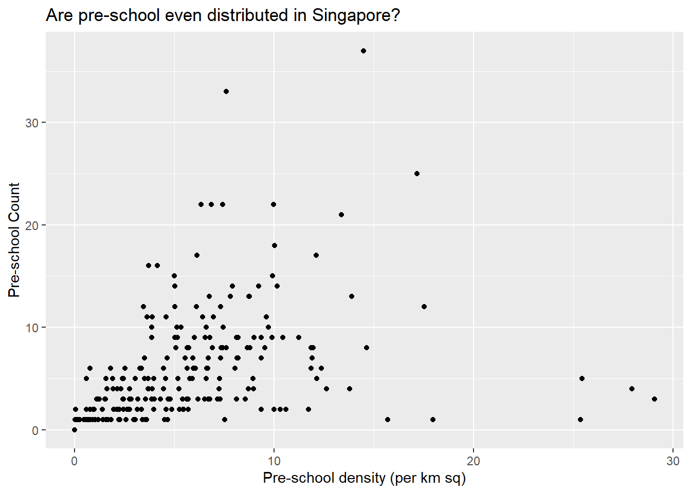

pacman::p_load(sf, tidyverse)Data Wrangling of Geospatial Data
Utilising the sf and tidyverse packages to tidy geospatial data.
geospatial
sf
Libraries
For this analysis, we will use the following packages from CRAN.
-
sf- Support for simple features, a standardized way to encode spatial vector data. Binds to ‘GDAL’ for reading and writing data, to ‘GEOS’ for geometrical operations, and to ‘PROJ’ for projection conversions and datum transformations. Uses by default the ‘s2’ package for spherical geometry operations on ellipsoidal (long/lat) coordinates. -
tidyverse- Loading the core tidyverse packages which will be used for data wrangling and visualisation.
Dataset
For this analysis, we will extract data that is available from the web.
Master Plan 2014 Subzone Boundary (Web) from data.gov.sg
Pre-Schools Location from data.gov.sg
Cycling Path from LTADataMall
Latest version of Singapore Airbnb listing data from Inside Airbnb
Extracting geographical information from Dataset
We will leverage on the st_read function to retrieve polygon, line and point feature in both ESRI shapefile and KML format.
The st_geometry function returns an object of class sfc whereas the glimpse function from dplyr act as a transposed version of the print function that shows the values of the different columns.
To check all the classes within the dataset, we use the sapply function to run the class function through all the columns within the data set and return their classes.
mpsz <- st_read(dsn = "data/geospatial",
layer = "MP14_SUBZONE_WEB_PL")Reading layer `MP14_SUBZONE_WEB_PL' from data source
`C:\jordanong09\ISSS624_Geospatial\posts\Geo\Geospatial_Datawrangling\data\geospatial'
using driver `ESRI Shapefile'
Simple feature collection with 323 features and 15 fields
Geometry type: MULTIPOLYGON
Dimension: XY
Bounding box: xmin: 2667.538 ymin: 15748.72 xmax: 56396.44 ymax: 50256.33
Projected CRS: SVY21cyclingpath <- st_read(dsn = "data/geospatial",
layer = "CyclingPath")Reading layer `CyclingPath' from data source
`C:\jordanong09\ISSS624_Geospatial\posts\Geo\Geospatial_Datawrangling\data\geospatial'
using driver `ESRI Shapefile'
Simple feature collection with 1625 features and 2 fields
Geometry type: LINESTRING
Dimension: XY
Bounding box: xmin: 12711.19 ymin: 28711.33 xmax: 42626.09 ymax: 48948.15
Projected CRS: SVY21preschool <- st_read("data/geospatial/pre-schools-location-kml.kml")Reading layer `PRESCHOOLS_LOCATION' from data source
`C:\jordanong09\ISSS624_Geospatial\posts\Geo\Geospatial_Datawrangling\data\geospatial\pre-schools-location-kml.kml'
using driver `KML'
Simple feature collection with 1359 features and 2 fields
Geometry type: POINT
Dimension: XYZ
Bounding box: xmin: 103.6824 ymin: 1.248403 xmax: 103.9897 ymax: 1.462134
z_range: zmin: 0 zmax: 0
Geodetic CRS: WGS 84st_geometry(mpsz)Geometry set for 323 features
Geometry type: MULTIPOLYGON
Dimension: XY
Bounding box: xmin: 2667.538 ymin: 15748.72 xmax: 56396.44 ymax: 50256.33
Projected CRS: SVY21
First 5 geometries:glimpse(mpsz)Rows: 323
Columns: 16
$ OBJECTID <int> 1, 2, 3, 4, 5, 6, 7, 8, 9, 10, 11, 12, 13, 14, 15, 16, 17, …
$ SUBZONE_NO <int> 1, 1, 3, 8, 3, 7, 9, 2, 13, 7, 12, 6, 1, 5, 1, 1, 3, 2, 2, …
$ SUBZONE_N <chr> "MARINA SOUTH", "PEARL'S HILL", "BOAT QUAY", "HENDERSON HIL…
$ SUBZONE_C <chr> "MSSZ01", "OTSZ01", "SRSZ03", "BMSZ08", "BMSZ03", "BMSZ07",…
$ CA_IND <chr> "Y", "Y", "Y", "N", "N", "N", "N", "Y", "N", "N", "N", "N",…
$ PLN_AREA_N <chr> "MARINA SOUTH", "OUTRAM", "SINGAPORE RIVER", "BUKIT MERAH",…
$ PLN_AREA_C <chr> "MS", "OT", "SR", "BM", "BM", "BM", "BM", "SR", "QT", "QT",…
$ REGION_N <chr> "CENTRAL REGION", "CENTRAL REGION", "CENTRAL REGION", "CENT…
$ REGION_C <chr> "CR", "CR", "CR", "CR", "CR", "CR", "CR", "CR", "CR", "CR",…
$ INC_CRC <chr> "5ED7EB253F99252E", "8C7149B9EB32EEFC", "C35FEFF02B13E0E5",…
$ FMEL_UPD_D <date> 2014-12-05, 2014-12-05, 2014-12-05, 2014-12-05, 2014-12-05…
$ X_ADDR <dbl> 31595.84, 28679.06, 29654.96, 26782.83, 26201.96, 25358.82,…
$ Y_ADDR <dbl> 29220.19, 29782.05, 29974.66, 29933.77, 30005.70, 29991.38,…
$ SHAPE_Leng <dbl> 5267.381, 3506.107, 1740.926, 3313.625, 2825.594, 4428.913,…
$ SHAPE_Area <dbl> 1630379.27, 559816.25, 160807.50, 595428.89, 387429.44, 103…
$ geometry <MULTIPOLYGON [m]> MULTIPOLYGON (((31495.56 30..., MULTIPOLYGON (…sapply(mpsz, class)$OBJECTID
[1] "integer"
$SUBZONE_NO
[1] "integer"
$SUBZONE_N
[1] "character"
$SUBZONE_C
[1] "character"
$CA_IND
[1] "character"
$PLN_AREA_N
[1] "character"
$PLN_AREA_C
[1] "character"
$REGION_N
[1] "character"
$REGION_C
[1] "character"
$INC_CRC
[1] "character"
$FMEL_UPD_D
[1] "Date"
$X_ADDR
[1] "numeric"
$Y_ADDR
[1] "numeric"
$SHAPE_Leng
[1] "numeric"
$SHAPE_Area
[1] "numeric"
$geometry
[1] "sfc_MULTIPOLYGON" "sfc" Plotting of geospatial data
Unlike non-geospatial dataset where we plot the data using charts, we will leverage on map-based visualisation to draw insights from our geospatial data. The plot function uses the geometry data, contained primarily in the polygons slot. plot is one of the most useful functions in R, as it changes its behaviour depending on the input data. From the example below, we can see how we manipulate the plot based on how we subset the dataset.
plot(mpsz) #plot based on the different column attributes
plot(mpsz["PLN_AREA_N"]) #colour plot based on column `PLN_AREA_N`
plot(st_geometry(mpsz)) #only plot the basic geometry of the polygon data
condition <- mpsz$SUBZONE_NO > 5 #set a condition
plot(mpsz[condition, ], col = "turquoise", add = TRUE) #layer the condition above the initial plot
Changing of Projection
The Coordinate Reference System (CRS) of spatial objects defines where they are placed on the Earth’s surface. We need to ensure the CRS of our sf objects are correct. Since Singapore uses EPSG:3414 - SVY21 / Singapore TM and from the above details, we understand that all the sf object does not conform to the correct CRS (WGS 84 or SVY21). We will utilise two different function, st_set_crs or st_transform to manually change the CRS of our sp object to the desired value.
mpsz3414 <- st_set_crs(mpsz, 3414)
preschool3414 <- st_transform(preschool,
crs = 3414)
st_geometry(mpsz3414)Geometry set for 323 features
Geometry type: MULTIPOLYGON
Dimension: XY
Bounding box: xmin: 2667.538 ymin: 15748.72 xmax: 56396.44 ymax: 50256.33
Projected CRS: SVY21 / Singapore TM
First 5 geometries:st_geometry(preschool3414)Geometry set for 1359 features
Geometry type: POINT
Dimension: XYZ
Bounding box: xmin: 11203.01 ymin: 25667.6 xmax: 45404.24 ymax: 49300.88
z_range: zmin: 0 zmax: 0
Projected CRS: SVY21 / Singapore TM
First 5 geometries:Importing and Converting an Aspatial Data
R provides the function to convert any foreign object to an sf object using the st_as_sf function. This will allow user to provide a data table that consist of the longitude and latitude and select the correct CRS to transform it to the approriate sf object.
After importing the data, we will examine the dataframe using the list function.
listings <- read_csv("data/aspatial/listings.csv")
list(listings) [[1]]
# A tibble: 4,252 × 16
id name host_id host_name neighbourhood_g… neighbourhood latitude
<dbl> <chr> <dbl> <chr> <chr> <chr> <dbl>
1 50646 Pleasant Ro… 227796 Sujatha Central Region Bukit Timah 1.33
2 71609 Ensuite Roo… 367042 Belinda East Region Tampines 1.35
3 71896 B&B Room 1… 367042 Belinda East Region Tampines 1.35
4 71903 Room 2-near… 367042 Belinda East Region Tampines 1.35
5 275343 Convenientl… 1439258 Joyce Central Region Bukit Merah 1.29
6 275344 15 mins to … 1439258 Joyce Central Region Bukit Merah 1.29
7 294281 5 mins walk… 1521514 Elizabeth Central Region Newton 1.31
8 301247 Nice room w… 1552002 Rahul Central Region Geylang 1.32
9 324945 20 Mins to … 1439258 Joyce Central Region Bukit Merah 1.29
10 330089 Accomo@ RED… 1439258 Joyce Central Region Bukit Merah 1.29
# … with 4,242 more rows, and 9 more variables: longitude <dbl>,
# room_type <chr>, price <dbl>, minimum_nights <dbl>,
# number_of_reviews <dbl>, last_review <date>, reviews_per_month <dbl>,
# calculated_host_listings_count <dbl>, availability_365 <dbl>The output reveals that the data frame consists of 4252 rows and 16 columns. The column longtitude and latitude will be required for to transform this data frame to a sf object.
listings_sf <- st_as_sf(listings,
coords = c("longitude", "latitude"),
crs=4326) %>%
st_transform(crs = 3414)
st_crs(listings_sf)Coordinate Reference System:
User input: EPSG:3414
wkt:
PROJCRS["SVY21 / Singapore TM",
BASEGEOGCRS["SVY21",
DATUM["SVY21",
ELLIPSOID["WGS 84",6378137,298.257223563,
LENGTHUNIT["metre",1]]],
PRIMEM["Greenwich",0,
ANGLEUNIT["degree",0.0174532925199433]],
ID["EPSG",4757]],
CONVERSION["Singapore Transverse Mercator",
METHOD["Transverse Mercator",
ID["EPSG",9807]],
PARAMETER["Latitude of natural origin",1.36666666666667,
ANGLEUNIT["degree",0.0174532925199433],
ID["EPSG",8801]],
PARAMETER["Longitude of natural origin",103.833333333333,
ANGLEUNIT["degree",0.0174532925199433],
ID["EPSG",8802]],
PARAMETER["Scale factor at natural origin",1,
SCALEUNIT["unity",1],
ID["EPSG",8805]],
PARAMETER["False easting",28001.642,
LENGTHUNIT["metre",1],
ID["EPSG",8806]],
PARAMETER["False northing",38744.572,
LENGTHUNIT["metre",1],
ID["EPSG",8807]]],
CS[Cartesian,2],
AXIS["northing (N)",north,
ORDER[1],
LENGTHUNIT["metre",1]],
AXIS["easting (E)",east,
ORDER[2],
LENGTHUNIT["metre",1]],
USAGE[
SCOPE["Cadastre, engineering survey, topographic mapping."],
AREA["Singapore - onshore and offshore."],
BBOX[1.13,103.59,1.47,104.07]],
ID["EPSG",3414]]Joining sf and tibble dataframe
One way to manipulate a dataframe is to combine two different sets of data frame together to combine the information retrieved. We will now aggregate the room price of the apartment based on the planning area.
-
mutate: Adds new variables and preserves existing ones. If the new column is referencing an exisiting column, it will replace the variable. Since all the planning area are in uppercase in the mpsz data frame, we will usetoupperto convert all the variables inside neighbourhood to uppercase. -
filter: To remove irrelevant rows that are not required for the join. -
rename: Rename the column. I will be changing the neighbourhood toPLN_AREA_Nto allow both data frame to identify the keys for the join. -
summarise: After grouping the variables through thegroup_byfunction, we will summarise it to one row with the average price using themeanfunction.
listings_tidy <- listings %>%
mutate (neighbourhood = toupper(neighbourhood)) %>%
filter ((neighbourhood %in% unique(mpsz$PLN_AREA_N))) %>%
rename("PLN_AREA_N" = "neighbourhood") %>%
group_by(PLN_AREA_N) %>%
summarise (avgprice = mean(price)) %>%
ungroup()
mpsz3414 <- mpsz3414 %>%
left_join(listings_tidy)Geoprocessing with sf package
Buffering
In some cases, there is a need to create a buffering zone along the linestring object. An example would be to expand 5m along a road and understanding the total area increased through the expansion. One way we can do this is to use the st_buffer function that computes a buffer around this geometry/each geometry. To find out the overall area, st_area will be used. If the coordinates are in degrees longtitude/latitude, st_geod_area is used for area calculation.
buffer_cycling <- st_buffer(cyclingpath,
dist=5, nQuadSegs = 30)
buffer_cycling$AREA <- st_area(buffer_cycling)
sum(buffer_cycling$AREA)773143.9 [m^2]Visualising of buffering
From the below visualisation, we are able to better understand how the buffer distance is being calculated and the different endCapStyle to be use for the buffer.
cyclingpath_buffer <- cyclingpath[1,] %>%
select (-CYL_PATH_1)
op = par(mfrow=c(2,3))
plot(st_buffer(cyclingpath_buffer, dist = 1, endCapStyle="ROUND"), reset = FALSE, main = "endCapStyle: ROUND, distance 1")
plot(cyclingpath_buffer,col='blue',add=TRUE)
plot(st_buffer(cyclingpath_buffer, dist = 2, endCapStyle="FLAT"), reset = FALSE, main = "endCapStyle: FLAT, distance 2")
plot(cyclingpath_buffer,col='blue',add=TRUE)
plot(st_buffer(cyclingpath_buffer, dist = 3, endCapStyle="SQUARE"), reset = FALSE, main = "endCapStyle: SQUARE, distance 3")
plot(cyclingpath_buffer,col='blue',add=TRUE)
mpsz3414$`PreSch Count`<- lengths(st_intersects(mpsz3414, preschool3414))
summary(mpsz3414$`PreSch Count`) Min. 1st Qu. Median Mean 3rd Qu. Max.
0.000 0.000 2.000 4.207 6.000 37.000 top_n(mpsz3414, 1, `PreSch Count`)Simple feature collection with 1 feature and 17 fields
Geometry type: MULTIPOLYGON
Dimension: XY
Bounding box: xmin: 23449.05 ymin: 46001.23 xmax: 25594.22 ymax: 47996.47
Projected CRS: SVY21 / Singapore TM
OBJECTID SUBZONE_NO SUBZONE_N SUBZONE_C CA_IND PLN_AREA_N PLN_AREA_C
1 290 3 WOODLANDS EAST WDSZ03 N WOODLANDS WD
REGION_N REGION_C INC_CRC FMEL_UPD_D X_ADDR Y_ADDR
1 NORTH REGION NR C90769E43EE6B0F2 2014-12-05 24506.64 46991.63
SHAPE_Leng SHAPE_Area avgprice geometry PreSch Count
1 6603.608 2553464 74.53191 MULTIPOLYGON (((24786.75 46... 37Plotting of geographical data
mpsz3414$Area <- mpsz3414 %>%
st_area()
mpsz3414 <- mpsz3414 %>%
mutate(`PreSch Density` = `PreSch Count`/Area * 1000000)
hist(mpsz3414$`PreSch Density`)
Visualising of geographical data using ggplot2
ggplot(data=mpsz3414,
aes(x= as.numeric(`PreSch Density`)))+
geom_histogram(bins=20,
color="black",
fill="light blue") +
labs(title = "Are pre-school even distributed in Singapore?",
subtitle= "There are many planning sub-zones with a single pre-school, on the other hand, \nthere are two planning sub-zones with at least 20 pre-schools",
x = "Pre-school density (per km sq)",
y = "Frequency")
ggplot(data=mpsz3414,
aes(x= as.numeric(`PreSch Density`), y = as.numeric(`PreSch Count`)))+
geom_point() +
labs(title = "Are pre-school even distributed in Singapore?",
x = "Pre-school density (per km sq)",
y = "Pre-school Count")